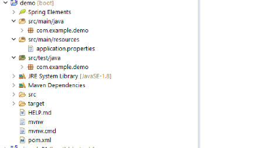

Si Spring Web MVC es una extensión dentro de Spring Framework dirigido a facilitar el desarrollo de aplicaciones web utilizando el patrón Modelo-Vista-Controlador, Spring Boot es una tecnología dentro de Spring que nos facilita por un lado, la creación del proyecto y por otro el despliege de la app en un servidor. Quiere decir esto que no vamos a dejar de usar Spring MVC por usar Spring Boot, al contrario.
Este primer proyecto es el de la página oficial spring.io que sirve de introducción. En posteriores proyectos haremos como con Spring Mvc, iremos añadiendo funcionalidades nuevas y lo iremos complicandon un poco. Es por este motivo que este proyecto no tiene repositorio en github, pues es una traducción muy resumida del ejemplo de la página oficial.
Aunque se puede hacer de varias maneras, lo vamos a hacer desde Spring Initializr como en la ejemplo oficial. En posteriores ejemplos lo haremos usando el Spring Tool Suite de Eclipse.
Esta página, es un formulario en donde seleccionamos nuestras opciones, que para este ejemplo dejamos todo por defecto y le añadimos la dependencia Spring Web.
Pulsamos generar y esto nos genera un zip que descomprimimos e importamos con el IDE que estemos trabajando, en mi caso con Eclipse.
Esto nos genera un proyecto con una estructura de árbol similar a esta:

<dependencies>
<dependency>
<groupId>org.springframework.boot</groupId>
<artifactId>spring-boot-starter-web</artifactId>
</dependency>
<dependency>
<groupId>org.springframework.boot</groupId>
<artifactId>spring-boot-starter-test</artifactId>
<scope>test</scope>
<exclusions>
<exclusion>
<groupId>org.junit.vintage</groupId>
<artifactId>junit-vintage-engine</artifactId>
</exclusion>
</exclusions>
</dependency>
</dependencies>
No tocamos el archivo pom.xml, pues Spring Initializr ya lo ha generado con las dependencias que le hemos indicado.
Spring Initializr crea una clase anotada con @SpringBootApplication, anotación que es equivalente a @Configuration, @EnableAutoConfiguration y @ComponentScan, todas ellas vistas en los proyectos anteriores.
package com.example.demo;
import org.springframework.boot.SpringApplication;
import org.springframework.boot.autoconfigure.SpringBootApplication;
@SpringBootApplication
public class DemoApplication {
public static void main(String[] args) {
SpringApplication.run(DemoApplication.class, args);
}
}
package com.example.demo.controller;
import org.springframework.web.bind.annotation.RequestMapping;
import org.springframework.web.bind.annotation.RestController;
/**
* Main controller
* @author Wanchopi
*
*/
@RestController
public class HelloController {
@RequestMapping("/")
public String index() {
return "Greetings from Spring Boot!";
}
}
El controlador está marcado con una anotación nueva @RestController, esta anotación es una combinación de @Controller y @ResponseBody, dos anotaciones que dan como resultado que las peticiones web devuelvan datos en lugar de una vista.
Corremos el proyecto desde eclipe y este despliega.
Para ver el resultado abrimos cualquier navegador y en la barra de navegación introducimos la dirección localhost:8080 y aparecerá el mensaje del controlador Greetings from Spring Boot!.
Cuando creamos el proyecto y Spring Boot creó el archivo pom.xml, crea una dependencia por defecto:
<dependency>
<groupId>org.springframework.boot</groupId>
<artifactId>spring-boot-starter-test</artifactId>
<scope>test</scope>
<exclusions>
<exclusion>
<groupId>org.junit.vintage</groupId>
<artifactId>junit-vintage-engine</artifactId>
</exclusion>
</exclusions>
</dependency>
Dependencia que ya habiamos visto en otros proyectos pero que nunca habiamos utilizado. Pues ha llegado el momento de hacer uso de ella. A partir de ahora, a todos nuestros proyectos con springboot2 les haremos test.
package com.wanchopi.controller;
import static org.hamcrest.Matchers.equalTo;
import static org.springframework.test.web.servlet.result.MockMvcResultMatchers.content;
import static org.springframework.test.web.servlet.result.MockMvcResultMatchers.status;
import org.junit.jupiter.api.Test;
import org.springframework.beans.factory.annotation.Autowired;
import org.springframework.boot.test.autoconfigure.web.servlet.AutoConfigureMockMvc;
import org.springframework.boot.test.context.SpringBootTest;
import org.springframework.http.MediaType;
import org.springframework.test.web.servlet.MockMvc;
import org.springframework.test.web.servlet.request.MockMvcRequestBuilders;
/**
* Controller class Test
* @author Wanchopi
*
*/
@SpringBootTest
@AutoConfigureMockMvc
public class HelloControllerTest {
@Autowired
private MockMvc mvc;
@Test
public void getHello() throws Exception {
mvc.perform(MockMvcRequestBuilders.get("/").accept(MediaType.APPLICATION_JSON))
.andExpect(status().isOk())
.andExpect(content().string(equalTo("Greetings from Spring Boot!")));
}
}
Con la anotación @SpringBootTest se crea todo el contexto de la aplicación, y con @AutoConfigureMockMvc inyecta una instancia MockMvc
@Test como a cualquier método que probemos, nada nuevo bajo el sol y dentro del método un código que iremos desgranando en sucesivos tutoriales.